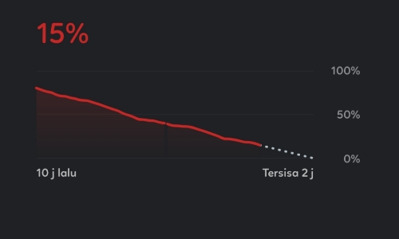
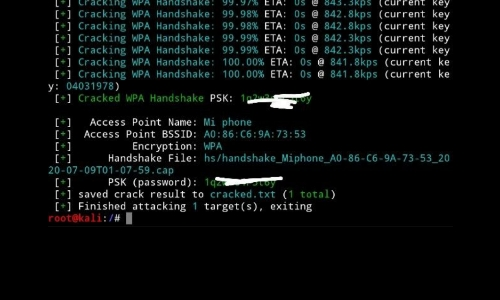

<meta name="KryPtoN Kernel" content="KryPtoN kernel is the open source kernel base of AOSP and CAF, and many variants in this kernel, PWR for OverClock CPU and GPU variants, BLC for balance or original stock variants, HCK for variant Hacking in this variant there is a special driver that I input and only advanced users use">
    <!-- Slider Area Start-->
    <section>
      <div class="landing text-lg-start text-center">
          <div class="container">
              <div class="row">
                  <div class="col-lg-6 col-md-9">
                    <h1 class="animate__animated animate__fadeInUp animate__slow">KryPtoN<br>Kernel</h1>
                    <p class="animate__animated animate__fadeInUp animate__slow">Meet the needs of the drive on your device.</p>
                    <a href="/download" class="btn radius-btn animate__animated animate__fadeInLeft animate__delay-1s">Download</a>
                  </div>
                  <div class="col-lg-6">
                      <div class="hero__img d-none d-lg-block f-right animate__animated animate__fadeInRight animate__delay-1s">
                          
                      </div>
                  </div>
              </div>
          </div>
      </div> 
      <svg xmlns="http://www.w3.org/2000/svg" viewBox="0 0 1440 320"><path fill-opacity="1" d="M0,192L48,202.7C96,213,192,235,288,208C384,181,480,107,576,106.7C672,107,768,181,864,192C960,203,1056,149,1152,144C1248,139,1344,181,1392,202.7L1440,224L1440,320L1392,320C1344,320,1248,320,1152,320C1056,320,960,320,864,320C768,320,672,320,576,320C480,320,384,320,288,320C192,320,96,320,48,320L0,320Z"></path></svg>
    </section>
    <!-- Slider Area End -->

    <section id="about" class="bg-accent">
      <div class="container">
        <div class="container-fluid">
          <div class="row">
            <div class="col-lg-6">
              <h1 class="invert-font animate__animated animate__fadeInLeft animate__slow wow">About</h1>
              <p class="invert-font animate__animated animate__fadeInLeft animate__slow wow">KryPtoN kernel is the open source kernel base of AOSP and CAF, and many variants in this kernel, PWR for OverClock CPU and GPU variants, BLC for balance or original stock variants, HCK for variant Hacking in this variant there is a special driver that I input and only advanced users use</p>
            </div>
            <div class="col-lg-6 sm-mt-5">
              <h1 class="invert-font animate__animated animate__fadeInLeft animate__slow wow">What is PWR, BLC, n HCK</h1>
              <ul>
                <li class="invert-font animate__animated animate__fadeInLeft animate__slow wow"><strong>PWR</strong> is a POWER or same as OverClock Kernel</li>
                <li class="invert-font animate__animated animate__fadeInLeft animate__slow wow"><strong>BLC</strong> is a BALACNE or same as Stock Kernel not a OverClock</li>
                <li class="invert-font animate__animated animate__fadeInLeft animate__slow wow"><strong>HCK</strong> is a HACK or same as Kenel support WIFI usb and for hacking variant, this variant for user advanced</li>
              </ul>
            </div>
          </div>
          <h1 class="invert-font animate__animated animate__fadeInLeft animate__slow wow text-center">What is kernel</h1>
          <p class="invert-font text-center animate__animated animate__fadeInLeft animate__slow wow">Kernel is a computer program that is the heart and core of an Operating System. Since the Operating System has control over the system so, the Kernel also has control over everything in the system. It is the most important part of an Operating System. Whenever a system starts, the Kernel is the first program that is loaded after the bootloader because the Kernel has to handle the rest of the thing of the system for the Operating System. The Kernel remains in the memory until the Operating System is shut-down.</p>
          <p class="invert-font text-center animate__animated animate__fadeInLeft animate__slow wow">The Kernel is responsible for low-level tasks such as disk management, memory management, task management, etc. It provides an interface between the user and the hardware components of the system. When a process makes a request to the Kernel, then it is called System Call.</p>
          <p class="invert-font text-center animate__animated animate__fadeInLeft animate__slow wow">A Kernel is provided with a protected Kernel Space which is a separate area of memory and this area is not accessible by other application programs. So, the code of the Kernel is loaded into this protected Kernel Space. Apart from this, the memory used by other applications is called the User Space. As these are two different spaces in the memory, so communication between them is a bit slower.</p>
        </div>
      </div>
      <svg xmlns="http://www.w3.org/2000/svg" viewBox="0 0 1440 320"><path fill-opacity="1" d="M0,128L48,144C96,160,192,192,288,186.7C384,181,480,139,576,149.3C672,160,768,224,864,213.3C960,203,1056,117,1152,96C1248,75,1344,117,1392,138.7L1440,160L1440,320L1392,320C1344,320,1248,320,1152,320C1056,320,960,320,864,320C768,320,672,320,576,320C480,320,384,320,288,320C192,320,96,320,48,320L0,320Z"></path></svg>
    </section>

    <!-- Best Features Start -->
    <section class="bg-second" id="fiture">
      <div class="container">
          <div class="row justify-content-end">
              <div class="col-xl-10 col-lg-10">
                  <!-- Section Tittle -->
                  <div class="row">
                      <div class="col-lg-10 col-md-10">
                          <div class="section-tittle">
                              <h1 class="animate__animated animate__bounceIn wow">Some of the best features!</h1>
                          </div>
                      </div>
                  </div>
                  <!-- Section caption -->
                  <div class="row mt-4">
                      <div class="col-xl-6 col-lg-6 col-md-6 animate__animated animate__bounceIn wow">
                        <p>
                          <i class="fas fa-tachometer-alt fa-2x"></i>
                        </p>
                        <h3>Overclocking</h3>
                        <p>Make your Device powerfull for gaming, another procesing.</p>
                      </div>
                      <div class="col-xl-6 col-lg-6 col-md-6 animate__animated animate__bounceIn wow">
                        <p>
                          <i class="fas fa-battery-half fa-2x"></i>
                        </p>
                        <h3>Save power usage</h3>
                        <p>Save baterry for use on long time, up to 10 hour.</p>
                      </div> 
                      <div class="col-xl-6 col-lg-6 col-md-6 animate__animated animate__bounceIn wow">
                        <p>
                          <i class="fas fa-angle-double-up fa-2x"></i>
                        </p>
                        <h3>Up to date</h3>
                        <p>Always update from linux source.</p>
                      </div>
                       <div class="col-xl-6 col-lg-6 col-md-6 animate__animated animate__bounceIn wow">
                        <p>
                          <i class="fas fa-wrench fa-2x"></i>
                        </p>
                        <h3>Tag CAF</h3>
                        <p>Awlays update tag CAF every update.</p>
                      </div>
                  </div>
              </div>
          </div>
      </div>
      <svg xmlns="http://www.w3.org/2000/svg" viewBox="0 0 1440 320"><path fill-opacity="1" d="M0,64L48,80C96,96,192,128,288,133.3C384,139,480,117,576,128C672,139,768,181,864,192C960,203,1056,181,1152,149.3C1248,117,1344,75,1392,53.3L1440,32L1440,320L1392,320C1344,320,1248,320,1152,320C1056,320,960,320,864,320C768,320,672,320,576,320C480,320,384,320,288,320C192,320,96,320,48,320L0,320Z"></path></svg>
    </section>
    <!-- Best Features End -->

    <section id="screenshot">
    <!-- Applic App Start -->
    <div class="container">
        <div class="container-fluid">
            <div class="row">
                <!-- slider Heading -->
                <div class="col-xl-4 col-lg-4 col-md-8">
                    <div class="single-cases-info mb-30 animate__animated animate__fadeIn animate__slow wow">
                        <h3>KryPtoN Kernel<br> Screenshot</h3>
                        <p>This a some screenshot from krypton kernel fiture, that fiture like a WIFI USB for pentest, and etc. </p>
                    </div>
                </div>
                <!-- OwL -->
                <div class="col-xl-8 col-lg-8 col-md-col-md-7 animate__animated animate__fadeIn animate__slow wow">
                    <div class="app-active owl-carousel"> 
                        <div class="single-cases-img">
                            
                        </div>
                        <div class="single-cases-img">
                            
                        </div>
                        <div class="single-cases-img">
                            
                        </div>
                    </div>
                </div>
            </div>
        </div>
    </div>
    </section>
    <!-- Applic App End -->
